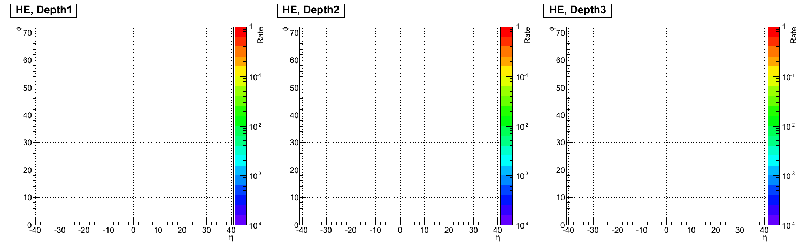
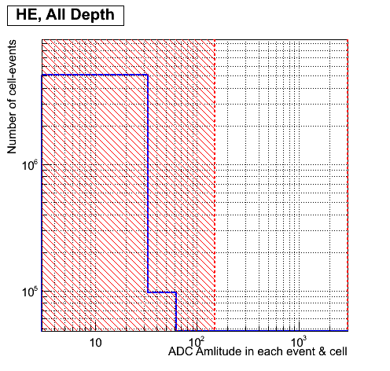
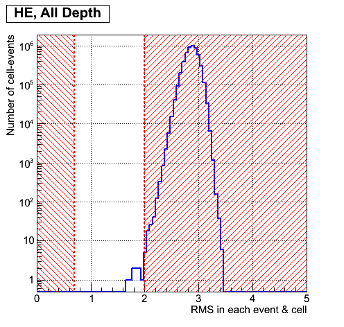
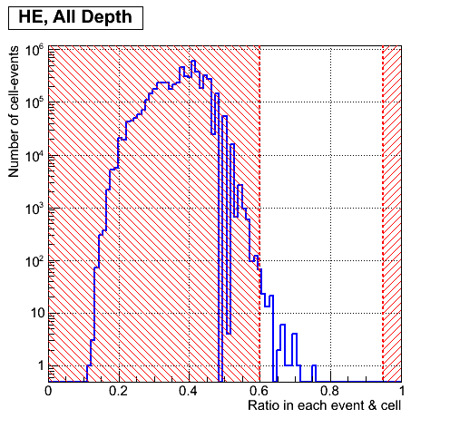
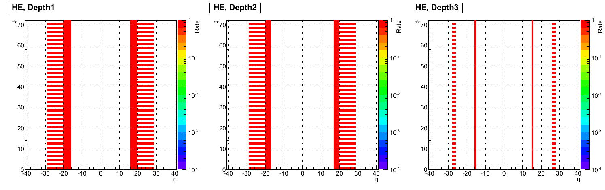
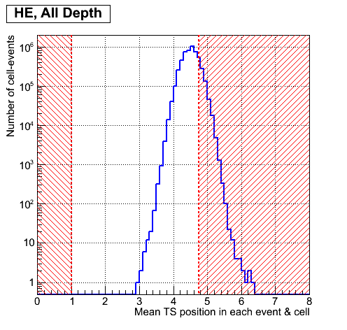
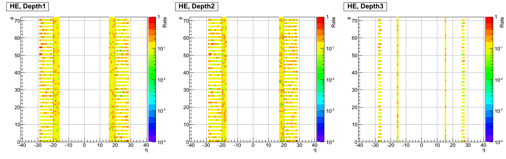
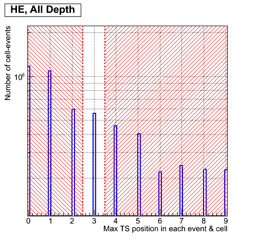

Criteria for megatile channels for HE, RUN = 225529
1.Cm criterion: CapID errors for each channel.
1.A. Rate of CapId failures in each channel for each depth.
Channel legend: white - good, other colour - bad.

2. Am criterion: ADC amplitude collected over all TSs(Full Amplitude) for each channel.
2.A. Full ADC amplitude distribution over all events, channels and depths.
Legend: Bins less 150 correpond to bad ADC amplitude

2.B. Rate of bad ADC amplitude (<150) in each channel for each depth.
Channel legend: white - good, other colours - bad.

3. Wm criterion: RMS (width) of ADC amplutude for each channel.
3.A. RMS distribution over all events, channel and depth.
Legend: Bins less 0.7 and more 2 correpond to bad RMS

3.B. Rate of bad RMS (<0.7,>2) in each channel for each depth.
Channel legend: white - good, other colour - bad.

4. Rm criterion: Ratio ADC value sum over four near maximum (-2, -1, max, +1) TS to ADC value sum over all TS for each channel.
4.A. Ratio distribution over all events, channels and depths.
Legend: Bins less 0.6 and more 0.95 correpond to bad ratio

4.B. Rate of bad ratio (<0.6, >0.95) in each channel for each depth.
Channel legend: white - good, other colour - bad.

5. TNm criterion: Mean TS position for each channel.
5.A. TN position distribution over all events, channels and depths.
Legend: Bins less 1 and more 4.75 correpond to bad mean position

5.B. Rate of bad TN position (<1, >4.75) in each channel for each depth.
Channel legend: white - good, other colour - bad.

6.TXm criterion: Maximum TS position for each channel.
6.A. TX position distribution over all events, channel and depth.
Legend: Bins less 2.5 and more 3.5 correpond to bad position

6.B. Rate of bad TX position (<2.5, >3.5) in each channel for each depth.
Channel legend: white - good, other colour - bad.